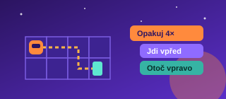

Mise: Záchrana sondy
Robotí dílna
Sonda na cizí planetě ztratila spojení. Naprogramuj servisního robota, aby přivezl baterie, zkontroloval anténu a vyhnul se překážkám. Program skládáš z bloků, spouštíš, krokuješ a ladíš.
- Co se naučíš: posloupnost příkazů, cyklus Opakuj, podmínka Když, krokování a hledání chyb.
- Čas: 12 misí ve 3 kapitolách, celkem 20–30 min. Bez časového limitu.
- Ovládání: bloky přetahuješ myší nebo prstem (za úchyt ⠿) kamkoli do programu – i mezi ostatní bloky a dovnitř cyklu. Klepnutím na blok v nabídce ho přidáš na označené místo. Z klávesnice: vyber blok, Alt+↑/↓ ho posune, Delete smaže.

Na telefonu hra funguje, ale na počítači je program i mapa přehlednější.
Tvůj postup
Postup se ukládá jen v tomto prohlížeči na tomto počítači. Nikam se neodesílá.
Program
Bloky – přetáhni do programu nebo klikni: